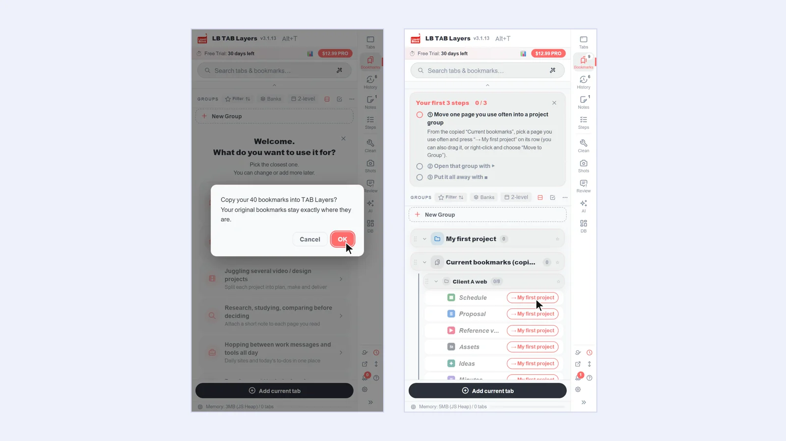
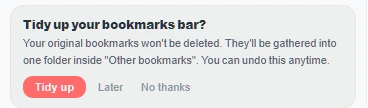
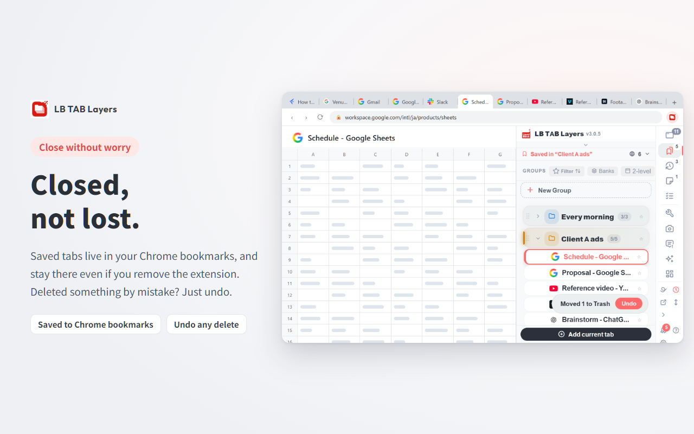

LB TAB Layers 3.1.13 brings three main changes: (1) you can start right after installing from a copy of your current bookmarks — the originals stay exactly where they are, (2) the first three steps are now “move one page with → My first project”, then ▶, then ■, and (3) once you are settled in, it offers to tidy your original bookmarks into one folder — nothing is deleted and you can always undo it. It also asks before opening a very large group, keeps the celebration pop-up from covering other messages, and matches Chrome’s own wording for bookmarks in Italian, Turkish and Dutch.
Version 3.1.13 is live in the Chrome Web Store. The theme of this release is “start right away from the bookmarks you already have.” An empty panel right after installing makes it hard to know where to begin, so now you can line up the bookmarks you already use and start organizing from there.
Chrome updates extensions on its own, so most people will get the new version without doing anything. If you want it right away, open chrome://extensions, turn on Developer mode at the top right, and click Update. The version number is shown on the LB TAB Layers card.
What changed in 3.1.13
| Change | What it does | Plan |
|---|---|---|
| Start from a copy of your bookmarks | “Start from your bookmarks (recommended)” on the welcome screen copies your Chrome bookmarks into the panel. The originals are not moved | Free |
| Your first 3 steps | If you started from a copy: move one page → open with ▶ → put away with ■. Moving takes one click on “→ My first project” | Free |
| Sorting a large collection | With 200 or more copied bookmarks, it suggests sorting them on the large screen (the dashboard) | PRO / trial |
| Tidy up the originals | Once you are settled in, it offers to gather your original bookmarks into one folder. Nothing is deleted, and you can always undo it | Free |
| Asks before opening many tabs | When ▶ would open more than 20 tabs, it asks first | Free |
| Celebration pop-up | No longer covers “Add current tab” or other messages, and doesn’t suggest something else during your first 3 steps | Free |
| Wording | Italian, Turkish and Dutch now use the same word for bookmarks as Chrome itself | Free |
1. Start from a copy of your current bookmarks
On the welcome screen you see right after installing, click “Start from your bookmarks (recommended)” at the very top. You will see how many bookmarks will be copied. Click “OK”, and your Chrome bookmarks are copied and lined up in the side panel.

- Your original bookmarks are not moved. The bookmarks bar and your folders stay exactly as they are, so nothing goes missing
- The copies are gathered in a holding area called “Current bookmarks (copied date)”, inside the “LB TAB Layers” folder of your Chrome bookmarks
- Each top-level folder (for example, a folder on your bookmarks bar) becomes a subgroup of the holding area. Anything in deeper folders goes into that subgroup, because groups go two levels deep
- Bookmarklets (bookmarks that start with
javascript:) are not copied, because they can’t open as tabs - The holding area doesn’t count toward the free version’s limit of 5 groups. Only what you move into your own groups counts
- Even a large collection usually takes only a few seconds. You can stop at any time with “Stop”, and what was copied so far stays
2. Your first 3 steps: move one page → ▶ → ■
If you started from a copy, a “Your first 3 steps” card appears at the top.
- Move one page you use often into a project group — just click “→ My first project” at the right end of a row in the holding area. You can also drag a row by its ⋮⋮ handle, or right-click and choose “Move to Group”
- Open that group with ▶
- Put it all away with ■

The “→ My first project” buttons appear only during step 1. Once you move one page, they disappear and the card moves on to step 2. While they are shown, the small buttons at the right end of each row (such as ★) are hidden so you don’t click the wrong one.
If you copied 200 or more bookmarks, the card also shows a button to sort them on the large screen (the dashboard), where you can drag pages from card to card. The dashboard is available in PRO and during the trial.
3. Tidy up your original bookmarks — without deleting anything
After you start from a copy, Chrome holds both your original bookmarks and the copies. Once you are settled in and no longer look at the originals, a small card like this appears above the holding area, just once.

- It doesn’t ask right away. It appears only after 7 days since the copy, at least 3 days of use after that, and at least 10 pages sorted out of the holding area. Being asked to clean up your bookmarks on day one would be unsettling
- Nothing is deleted. “Tidy up” moves what is on your bookmarks bar and in “Other bookmarks” into one folder, “Tidied bookmarks (date)”, inside “Other bookmarks”. The LB TAB Layers folder stays where it is
- You can always undo it. Use “Undo” in the message right after tidying, or right-click the holding area and choose “Put tidied bookmarks back”. Everything returns to its original place and order
- “Later” asks again in 14 days; “No thanks” stops asking. To tidy up without waiting, right-click the holding area and choose “Tidy up original bookmarks…”
4. Other improvements
- Asks before opening many tabs — when a group’s ▶ would open more than 20 tabs, it asks “Open N tabs?” first, so clicking a big folder by mistake won’t flood Chrome with tabs
- Celebration pop-up — the pop-up you see the first time you use a feature could cover “Add current tab” and other messages, hiding important hints. It now sits at the very bottom, with messages above it, and it no longer suggests something else during your first 3 steps
- No medals just for copying — copying many bookmarks used to award medals such as “100 bookmarks” all at once. Now only what you move into your own groups counts
- Long messages wrap — messages with an “Undo” button were cut off when the text was long; they now wrap
- Wording — Italian, Turkish and Dutch now use the same word for bookmarks as Chrome itself (preferiti, yer işaretleri, bookmarks)
If you already use LB TAB Layers
Your screen and your groups stay as they are. Starting from a copy is part of the welcome screen right after installing; it doesn’t change anything for people who already have groups.
Frequently asked questions
Q. If I start from a copy, are my original bookmarks deleted?
No. Your original bookmarks are not moved and stay where they are. The copies are gathered in “Current bookmarks (copied date)” inside the “LB TAB Layers” folder of your Chrome bookmarks.
Q. Won’t I end up with every bookmark twice?
Yes, Chrome will hold both the originals and the copies. Once you are settled in, LB TAB Layers offers to gather the originals into one folder. Nothing is deleted, and you can always undo it.
Q. Does the holding area count toward the free version’s group limit?
No. The free version allows 5 groups, but the holding area and its subgroups don’t count. Only what you move into your own groups counts.
Q. When does the tidy-up card appear?
Once, after 7 days since the copy, at least 3 days of use after that, and at least 10 pages sorted out of the holding area. To tidy up without waiting, right-click the holding area and choose “Tidy up original bookmarks…”.
Q. Are the new features free?
Starting from a copy, the first 3 steps, tidying up the originals and the check before opening many tabs all work in the free version. The dashboard it suggests for large collections is available in PRO and during the trial.
See it in action



Start right away from your bookmarks.
Copy them into the panel — the originals stay put. No account needed, saved as Chrome bookmarks, every feature free for 30 days.
Add to Chrome — it's free →